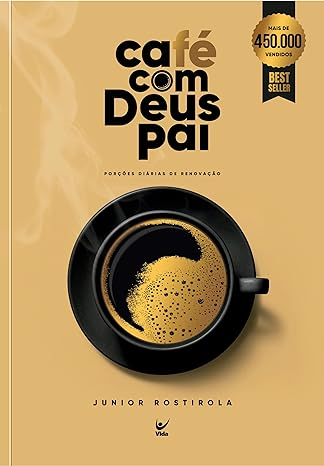

Café com Deus Pai
Porções Diárias de Renovação
A vida é cheia de desafios. Não são poucas as vezes em que acordamos pensando em uma fórmula que resolva todos os nossos problemas, tanto os que já conhecemos como aqueles que enfrentaremos um dia. Porém, a verdade é que o único momento capaz de ser vivido é o presente, e nada adianta gastarmos tempo com questões que fogem do nosso controle. Agora, imagine ter a chance de parar por alguns instantes e desfrutar de um agradável momento com alguém que tenha a resposta para todas as nossas preocupações. Essa é a experiência que você encontrará no decorrer destas páginas. Ao longo de devocionais diários, lhe convidamos para um encontro com Deus que, além de ensinar uma nova forma de apreciar uma xícara de café, mostrará como a vida também pode ser saboreada. Sim, o Pai deseja tomar café com você. E o sabor desse grão será incomparável a tudo o que já provou.
Compre AquiO que é o livro Café com Deus Pai?
Café com Deus Pai - Porções Diárias de Renovação um livro inspirador escrito por Júnior Rostirola. Este livro convida o leitor a uma experiência única e revigorante: um encontro diário com Deus através da leitura de devocionais profundamente reflexivos. Em suas 365 páginas, encontramos trechos da Bíblia, reflexões inspiradoras e orações. A proposta é que, ao saborear uma xícara de café, também possamos saborear a presença de Deus em nossa vida diária. Os temas abordados incluem amor, fé, esperança, gratidão e perdão. Assim, a cada dia, somos convidados a um momento de paz, reflexão e renovação. O Pai deseja tomar café conosco, e o sabor desse encontro transcende qualquer grão terreno. Recomendo fortemente a leitura deste livro transformador.
Informações sobre Autor
Junior Rostirola
É casado com Michelle e pai de João Pedro e Isabella. Pastor Sênior da Igreja Reviver com sede na cidade de Itajaí - SC, lidera uma comunidade cristã socialmente relevante, com extensão no Haiti. Bacharel em Teologia e pós-graduado em Teologia Bíblica, Junior é também autor do livro Encontrei um Pai, que conta sua história de superação e leva o leitor a uma jornada em busca da sua verdadeira identidade. Ele que foi órfão de pai vivo, hoje é carinhosamente chamado de pai para muitos, através do seu chamado na área de paternidade. Ao superar suas dores, o autor ressignificou a sua história e se tornou também fundador da Associação escolhiamar.org.br que abrange diversos projetos sociais.
O livro Café com Deus Pai convida o leitor a ter uma experiência única e revigorante: um encontro diário com Deus através da leitura de devocionais profundamente reflexivos.
Isso faz nós da a prioridade para Deus e ter o momento entre você e ele.
Compre Aqui